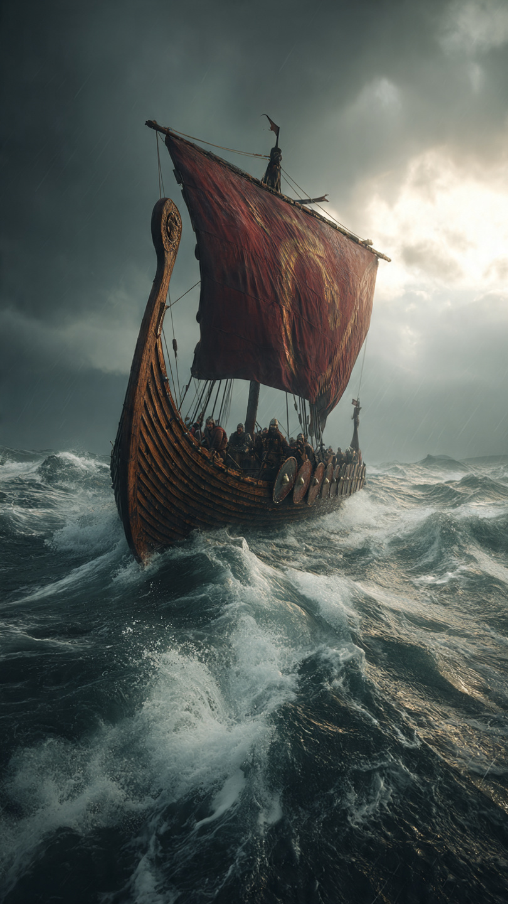

```html id="2b7nwm"
أول من وصل إلى أمريكا... ولم يكن كولومبوس | قصص تاريخية
```
عندما يُسأل معظم الناس:
"من أول أوروبي وصل إلى أمريكا؟"
تكون الإجابة غالبًا:
كريستوفر كولومبوس.
لكن الحقيقة التاريخية أكثر إثارة.
فقد وصل أوروبيون إلى أمريكا الشمالية قبل رحلة كولومبوس بحوالي خمسة قرون.
وكانوا محاربين وبحارة عُرفوا باسم الفايكنج.
في أواخر القرن العاشر الميلادي، عاش مستكشف شاب يُدعى ليف إريكسون.
كان ابن المستكشف الشهير إريك الأحمر، الذي أسس أولى المستوطنات الإسكندنافية في جرينلاند.
ومنذ صغره، اعتاد ليف الإبحار في البحار الباردة، ومواجهة العواصف، واكتشاف الأراضي المجهولة.
وكان حلمه أن يرى ما يوجد خلف المحيط الواسع غرب جرينلاند.
وتحكي الملاحم الإسكندنافية أن أحد البحارة شاهد أرضًا بعيدة أثناء انحراف سفينته عن مسارها.
وعندما سمع ليف بهذه الرواية، قرر تجهيز سفينة والانطلاق لاستكشاف تلك الأراضي بنفسه.
وبعد رحلة طويلة عبر أمواج المحيط الأطلسي، ظهرت أمامه سواحل لم يرها الأوروبيون من قبل.
كانت مليئة بالغابات والأنهار، وتختلف تمامًا عن الجليد الذي اعتاد رؤيته في الشمال.
وأطلق الفايكنج على تلك المنطقة اسم فينلاند.
ولسنوات طويلة، اعتقد كثير من الناس أن هذه القصة مجرد أسطورة وردت في الملاحم القديمة.
لكن في القرن العشرين، اكتشف علماء الآثار بقايا مستوطنة للفايكنج في موقع لانس أو ميدوز في كندا.
وأكدت الأدلة أن الفايكنج وصلوا بالفعل إلى أمريكا الشمالية قبل كولومبوس بحوالي خمسمائة عام.
لكن...
إذا كانوا وصلوا أولًا...
فلماذا ارتبط اكتشاف أمريكا باسم كولومبوس؟
هذا ما سنعرفه في الجزء الثاني.
📷 الصورة رقم 1
بعد اكتشاف بقايا مستوطنة الفايكنج في كندا، تأكد المؤرخون أن ليف إريكسون ورفاقه سبقوا كريستوفر كولومبوس في الوصول إلى أمريكا الشمالية بحوالي خمسة قرون.
لكن رحلتهم لم تُحدث التغيير الكبير الذي أحدثته رحلات كولومبوس لاحقًا.
وهنا يكمن الفرق بين الحدثين.
تشير الملاحم الإسكندنافية إلى أن الفايكنج حاولوا إنشاء مستوطنة صغيرة في أرض فينلاند.
وكانت المنطقة غنية بالأخشاب، وهو مورد نادر في جرينلاند.
لكن المستوطنة لم تستمر طويلًا.
فقد واجه المستوطنون صعوبات عديدة، مثل بُعد المسافة عن موطنهم، ونقص الإمدادات، إضافة إلى الاحتكاكات مع السكان الأصليين الذين أطلقت عليهم الملاحم اسم "السكريلينغ".
ولهذا عاد معظمهم إلى جرينلاند بعد فترة.
وبعد ذلك بقرون، أبحر كريستوفر كولومبوس عام 1492 باحثًا عن طريق بحري جديد إلى آسيا.
لكنه وصل إلى جزر الكاريبي، ولم يكن يعلم أنه وصل إلى قارة لم تكن معروفة للأوروبيين في ذلك الوقت.
ورغم أنه لم يصل إلى البر الرئيسي لأمريكا الشمالية، فإن رحلته فتحت الباب أمام موجات كبيرة من الاستكشاف الأوروبي، وأدت إلى تغيرات تاريخية واسعة.
ولهذا ارتبط اسمه لفترة طويلة بما عُرف في الكتب باسم "اكتشاف العالم الجديد".
واليوم، يوضح المؤرخون أن الفايكنج كانوا أول الأوروبيين المعروفين الذين وصلوا إلى أمريكا الشمالية، بينما كانت رحلة كولومبوس بداية الاتصال المستمر بين أوروبا والأمريكتين.
أما الشعوب الأصلية، فقد كانت تعيش في القارتين منذ آلاف السنين قبل وصول أي مستكشف أوروبي.
ولهذا فإن استخدام كلمة "اكتشاف" يحتاج إلى فهم السياق التاريخي بدقة.
لكن...
كيف أثبت العلماء أن مستوطنة الفايكنج كانت حقيقية؟
وما الذي كشفته الحفريات الأثرية هناك؟
هذا ما سنعرفه في الجزء الثالث والأخير.
📷 الصورة رقم 2

في عام 1960، حقق علماء الآثار اكتشافًا غيّر فهم التاريخ.
فقد عثر الباحثان النرويجيان هيلغه آن وإنغستاد على بقايا مستوطنة قديمة في موقع لانس أو ميدوز في جزيرة نيوفاوندلاند الكندية.
وكشفت الحفريات عن منازل بُنيت بالطريقة الإسكندنافية، وأدوات حديدية، وآثار ورش لصناعة المعادن، وهي أدلة أكدت أن الفايكنج عاشوا هناك بالفعل قبل أكثر من ألف عام.
وبعد سنوات من الدراسات، اتفق معظم المؤرخين على أن هذه المستوطنة تمثل أول وجود أوروبي معروف في أمريكا الشمالية.
لكنها كانت صغيرة ومؤقتة، ولم تتحول إلى مستعمرات دائمة.
ولهذا لم تؤثر في تاريخ العالم كما أثرت الرحلات الأوروبية التي جاءت بعد قرون.
ومع ذلك، فقد أثبتت أن عبور المحيط الأطلسي كان ممكنًا قبل زمن كولومبوس بوقت طويل.
وتذكرنا هذه القصة بأن التاريخ أكثر تعقيدًا مما يبدو.
فقد يصل أشخاص إلى مكان ما أولًا، لكنهم لا يغيّرون مجرى الأحداث، بينما تأتي رحلات لاحقة فتترك أثرًا عالميًا.
كما تذكرنا أيضًا بأن الشعوب الأصلية كانت تعيش في الأمريكتين منذ آلاف السنين، وأن تاريخ القارتين لم يبدأ بوصول الأوروبيين، بل يمتد إلى عصور أقدم بكثير.
واليوم، أصبح موقع لانس أو ميدوز أحد أهم المواقع الأثرية في العالم، ويقف شاهدًا على رحلة بحرية جريئة قام بها الفايكنج عبر المحيط قبل أكثر من ألف سنة.
وهكذا أثبت العلم أن بعض الروايات القديمة التي اعتُبرت أساطير كانت تحمل في داخلها جزءًا كبيرًا من الحقيقة، وأن كل اكتشاف أثري جديد يساعدنا على فهم الماضي بصورة أدق.
⛵🌎 انتهت القصة 🌎⛵